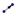

CurvatureVector[Point, Function]: Yields the curvature vector of the function in the given point.
CurvatureVector[Point, Curve]: Yields the curvature vector of the curve in the given point.
Direction[Line]:
Yields the direction vector of the line.
Note: A line with equation ax + by = c has the direction vector (b, - a).
PerpendicularVector[Line]:
Returns the perpendicular vector of the line.
Note: A line with equation ax + by = c has the perpendicular vector
(a, b).
PerpendicularVector[Vector
v]: Returns the perpendicular vector of the given vector.
Note: A vector with coordinates (a, b) has the perpendicular vector (-b, a).
UnitPerpendicularVector[Line]: Returns the perpendicular vector with length 1 of the given line.
UnitPerpendicularVector[Vector]: Returns the perpendicular vector with length 1 of the given vector.
UnitVector[Line]: Yields the direction vector with length 1 of the given line.
UnitVector[Vector]:
Yields a vector with length 1, which has the same direction and orientation as
the given vector.
Vector[Point A, Point B]: Creates a vector from point A to point B.
Vector[Point]: Returns the position vector of the given point.
Note: Also see tool  Vector between Two Points